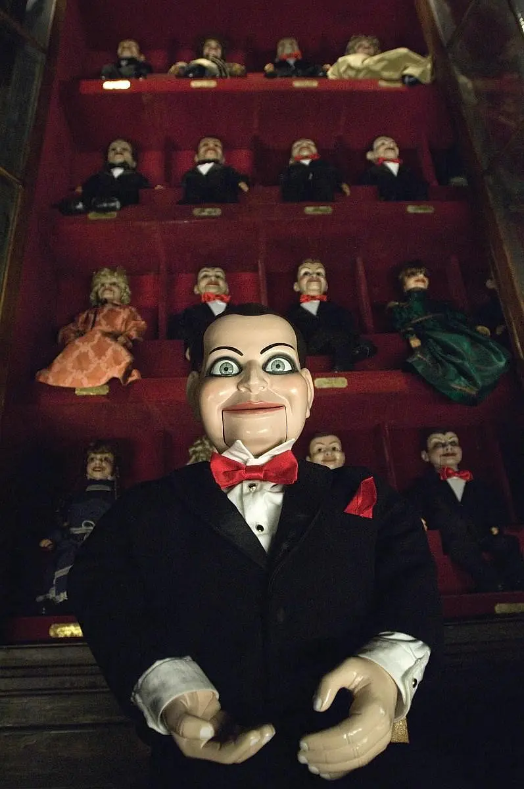
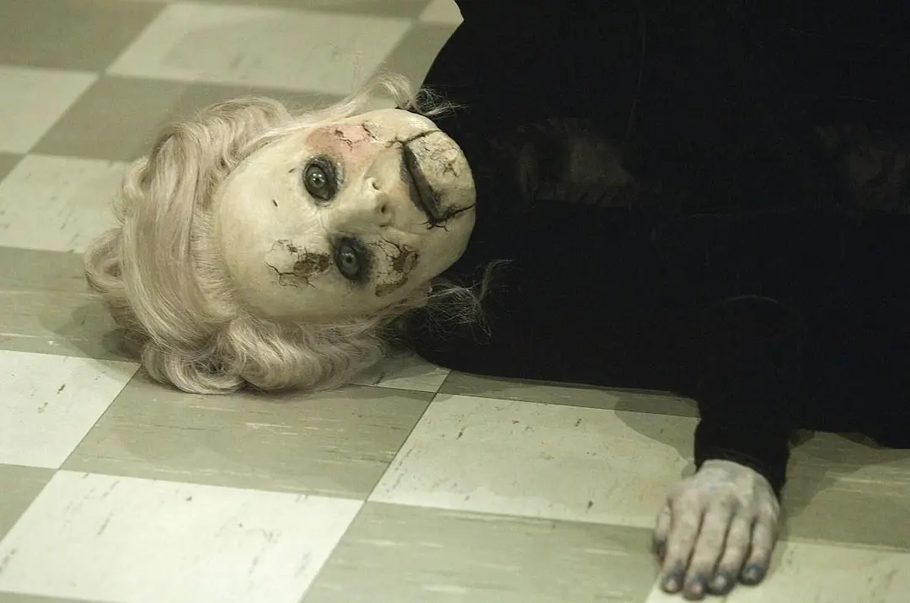
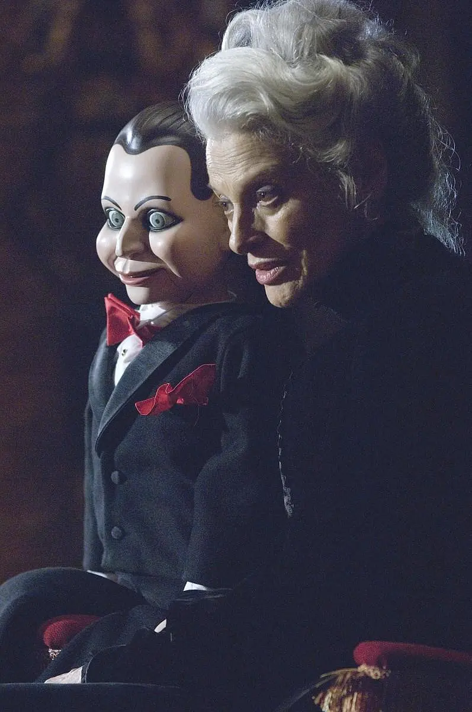
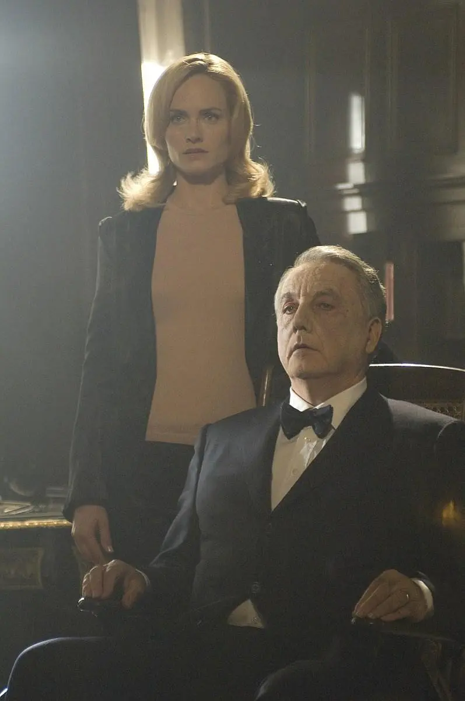
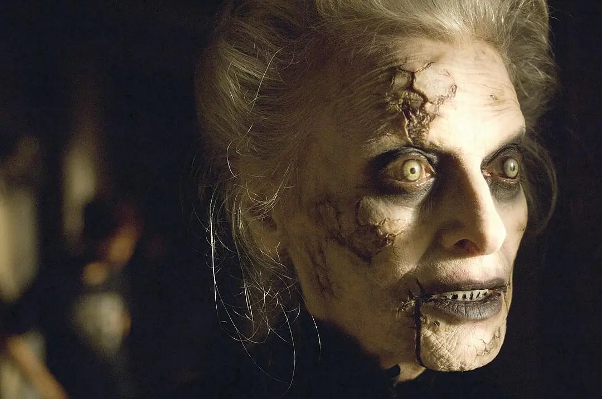

Rate
7.8/10
Trailor
Synopsis
Nursery rhymes should be full of laughter and laughter, but there are so many nursery rhymes in the world that make people horrified. There is such a scary nursery rhyme in the small town of Ravens Farr: Beware of the stare from Mary Shaw; she has no children, only dolls; if you see her, don't scream; or she will rip your mouth open Rip your tongue out. This town has always been under the curse of this nursery rhyme. As long as there are dolls, someone will be killed, and the death will be like a tongue cut off. Shortly after their wedding, Jimmy and Sally decided to move out of this cursed place, but in the end Sally still didn't escape the curse. Grieving Jimmy decides to send his wife's body back to his hometown, and sets out to investigate the horrific curse that hangs over the town. As the investigation deepens, Jimmy discovers another truth behind the nursery rhyme.
Stills
    Role table
| Role | Cast |
|---|---|
| Jamie Ashen | Ryan Kwanten |
| Ella Ashen | Amber Valletta |
| Det. Lipton | Donnie Wahlberg |
| Henry Walker | Michael Fairman |
Reviews
- very nice very nice
- The unrested soul is placed on the puppet, and there is an unexpected ending for you.
- A horror movie with beautiful pictures, most of the plots are bloody, but the ending is powerful!
- Is the evil spirit teasing the male protagonist? There are so many opportunities to kill him, why not kill him, you must have enough fun before you start.